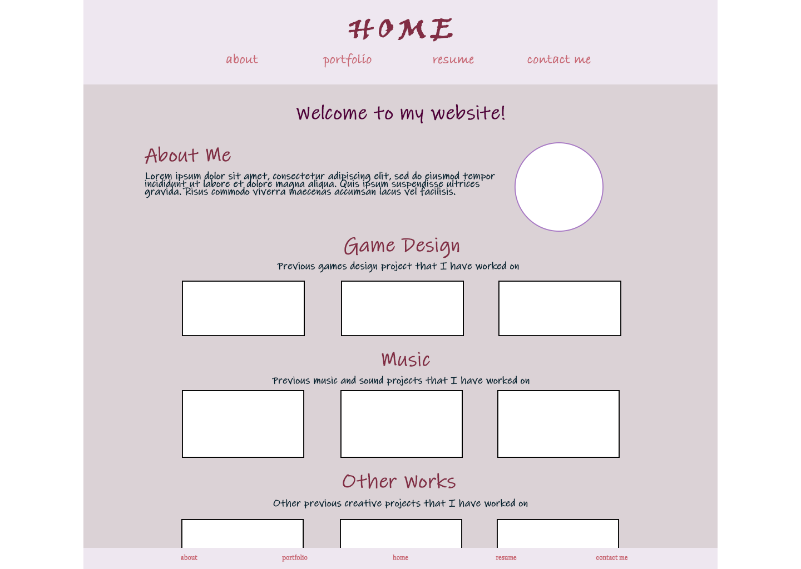
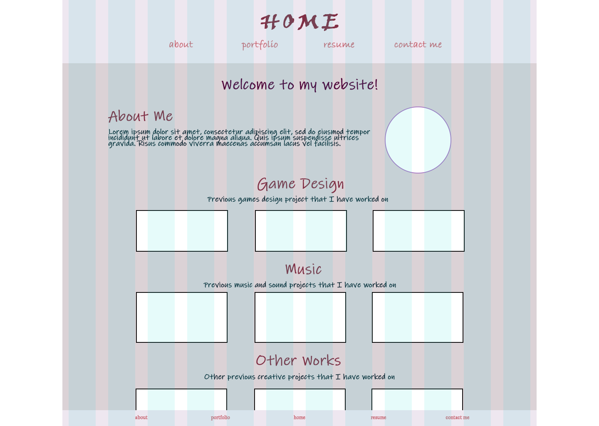
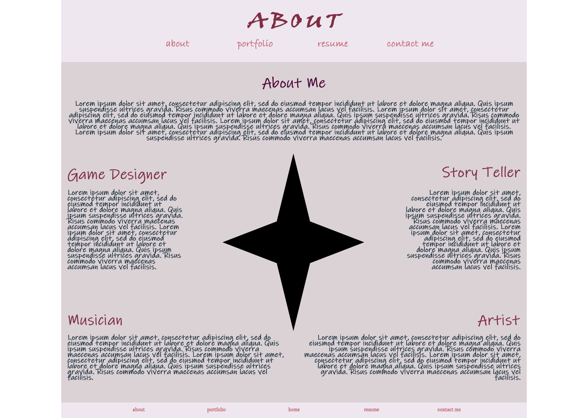
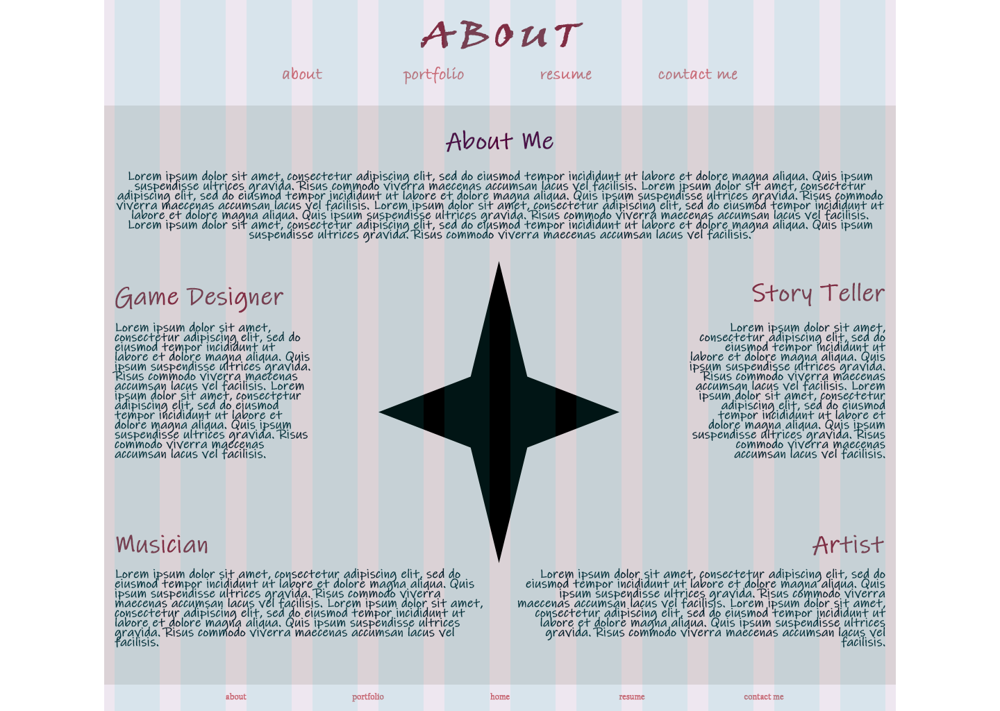
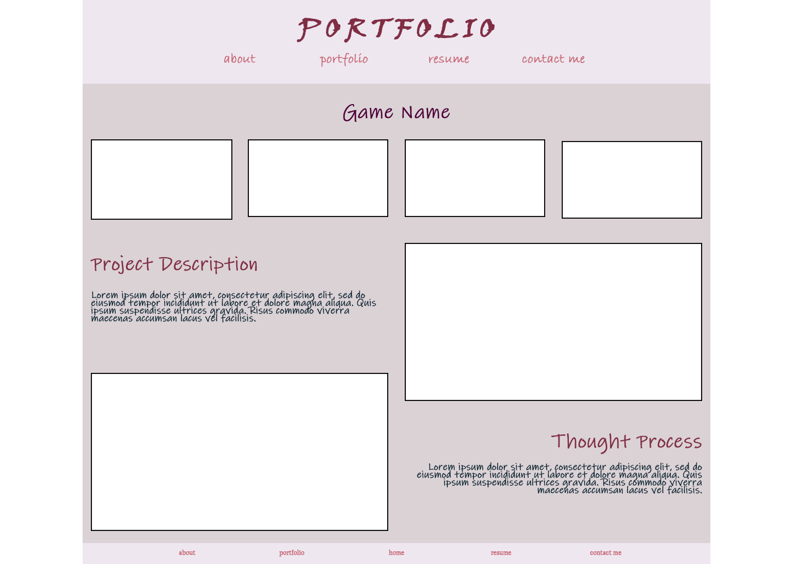
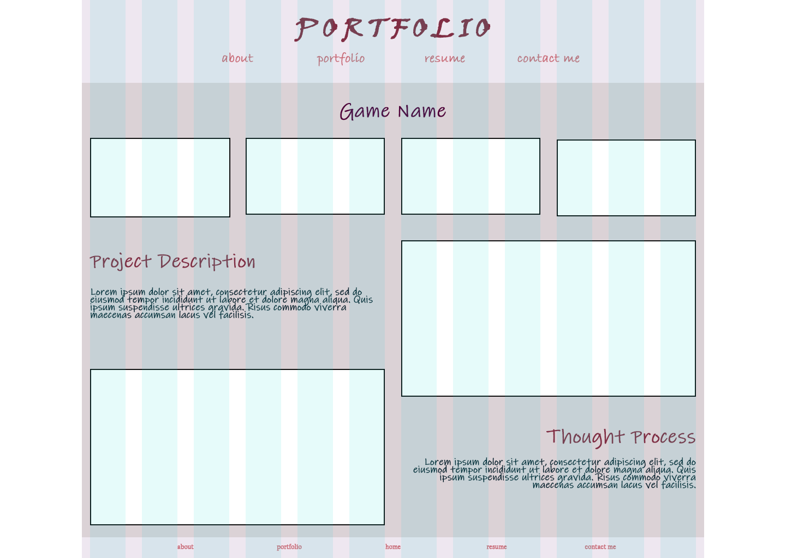

This idea is based on my second set of wireframes. Overall, I think I prefer this second idea better. Since this idea is more fleshed out, I think it is more graphically unique (though it still has a long way to go). In future mockup updates, I'll likely be adding a background image of sorts for each page. Since I liked the header and footer idea from the last idea, I kept it the same in this one with a different color scheme and typography set.
Similar to my second wireframe idea, the home page has links to "about me" and "portfolio". I made sure to include navigation in both my header and my footer for ease of acess. Depending on how much content is on each page, the header and footer won't be seen at the same time, making it less repetitive.
The circle represents a photo of myself and clicking on "about me" will link to the about me page. Each of the portfolio pieces will link to a separate page for the portfolio, and each category may have scrolling if there are more than three pieces present. I also may reorganize the categories in the future (haven't planned what specifically will be in the portfolio but hopefully it will be in the revised mockup).
 The about me page has sections that talk about different aspects of me and my creative ventures. In addition, the middle star shape will be a picture of myself. I was trying to create a unique shape in photoshop and ended up freezing the program, but that shape will likely be replaced in the revision.
 This is what a basic portfolio page will look like. I'll likely need to make separate mockups for pages for music since they will have less images for them than the game design pages. In addition, I will be planning a system to make it easy to switch between works (a table of contents at the top with an unordered list or something along those lines).
 